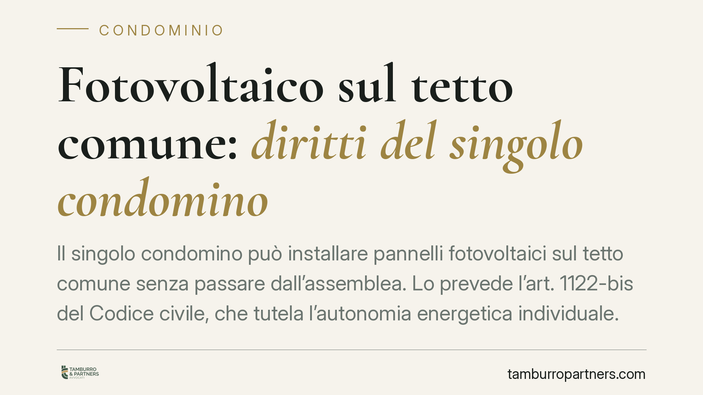

Fotovoltaico sul tetto comune: diritti del singolo condomino
Il singolo condomino può installare pannelli fotovoltaici sul tetto comune senza passare dall'assemblea. Lo prevede l'art. 1122-bis del Codice civile, che tutela l'autonomia energetica individuale. Resta però aperto un nodo pratico: come dividere il tetto quando più condomini vogliono usarlo. La giurisprudenza di merito segue criteri diversi e genera incertezza su un tema sempre più frequente.

Il fatto
Il tema è di stretta attualità: sempre più condomini decidono di installare impianti fotovoltaici a servizio della propria unità immobiliare. Il punto di partenza è chiaro. Il tetto è un bene comune (art. 1117 c.c.), ma il singolo può utilizzarlo per il proprio impianto senza chiedere il via libera all'assemblea.
Il problema emerge quando lo spazio disponibile sul tetto è limitato e più condomini ne rivendicano l'uso. Qui la giurisprudenza di merito si divide, lasciando chi vuole investire in rinnovabili senza una regola uniforme.
Inquadramento normativo
La disciplina è contenuta nell'art. 1122-bis del Codice civile, introdotto dalla riforma del condominio (Legge 220/2012). La norma distingue due situazioni.
Per gli impianti "non centralizzati" di produzione di energia da fonti rinnovabili destinati al servizio di singole unità, il condomino ha diritto di installarli sul lastrico solare, sul tetto o su altre parti comuni. Non serve l'autorizzazione dell'assemblea: si tratta di un diritto riconosciuto dalla legge, espressione del principio di uso individuale delle parti comuni (art. 1102 c.c.).
La norma impone però limiti precisi. Il condomino deve dare comunicazione preventiva all'amministratore. L'assemblea, inoltre, può prescrivere "adeguate modalità alternative di esecuzione" o imporre cautele a salvaguardia della stabilità, della sicurezza e del decoro architettonico dell'edificio. In presenza di più richieste concorrenti, l'assemblea può ripartire l'uso del lastrico o del tetto.
È proprio su questa ripartizione che si registra il contrasto. Alcuni giudici — come il Tribunale di Rovereto — privilegiano un criterio qualitativo: valutano l'esposizione, l'irraggiamento e l'effettiva utilità delle diverse porzioni di tetto. Altri — come il Tribunale di Torino — applicano un criterio quantitativo-millesimale, dividendo le superfici in proporzione alle quote di proprietà. La Corte di Appello di Roma si è a sua volta confrontata con la questione. In assenza di un orientamento consolidato della Corte di Cassazione sul punto specifico, l'esito può variare a seconda del foro competente.
Implicazioni pratiche
Per il condomino che vuole installare l'impianto, la prima implicazione è positiva: non deve attendere una delibera assembleare. Il diritto esiste per legge.
Questo non significa, però, assenza di regole. La comunicazione all'amministratore è un passaggio necessario, non una formalità. Omessa la comunicazione, l'impianto può essere contestato e il condomino esposto a una richiesta di rimozione.
Il secondo nodo riguarda la convivenza tra più aspiranti "produttori". Se il tetto non basta per tutti, la spartizione dello spazio diventa inevitabile. E poiché il criterio di ripartizione non è univoco, chi arriva per primo non ha automaticamente la precedenza, né chi ha più millesimi ha necessariamente diritto alla porzione migliore. L'incertezza aumenta il rischio di contenzioso.
Infine, resta ferma la tutela del decoro architettonico e della sicurezza dell'edificio. Un impianto che altera in modo rilevante l'aspetto del fabbricato o ne compromette la stabilità può essere legittimamente contestato dagli altri condomini.
Cosa fare in concreto
- Invia la comunicazione preventiva all'amministratore prima di avviare i lavori, descrivendo l'impianto, la collocazione e le modalità di installazione.
- Documenta l'esposizione e l'irraggiamento della porzione di tetto che intendi utilizzare: in caso di richieste concorrenti, questi dati sono decisivi sotto il profilo del criterio qualitativo.
- Verifica il regolamento condominiale e l'eventuale presenza di vincoli paesaggistici o storico-architettonici sull'edificio prima di procedere.
- Coinvolgi un tecnico abilitato per una relazione sulla stabilità e sulla compatibilità dell'impianto con la struttura e il decoro del fabbricato.
- Valuta un accordo scritto con gli altri condomini sull'uso delle superfici: prevenire la lite è preferibile a subire l'incertezza giurisprudenziale.
Consigliamo di affrontare il tema con un confronto preliminare tra condomini e amministratore. In un contesto normativo chiaro sul diritto, ma ancora frammentato sulla ripartizione, la soluzione concordata resta lo strumento più efficace per evitare il contenzioso.
---
*Contributo informativo a cura di Tamburro & Partners - Avv. Giuseppe Tamburro. Non costituisce parere legale.*
Ogni condominio ha una storia a sé.
Se gestisci un'amministrazione e vuoi un confronto su una specifica questione condominiale, scrivi allo studio. Ti rispondiamo entro un giorno lavorativo.